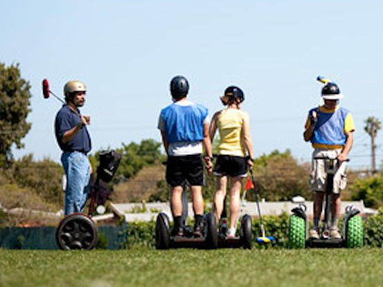

Today's News
|| Featured Topics ||
A chic geek sport emerges for the smart, pudgy, pale, and rich.
by Ivan Youloos
What do billionaire geeks do for sport? They play polo. On segways. Segway polo works a lot like regular polo, except instead of riding horses, the players are on Segways, and instead of evoking glamorous images of a centuries-old aristocratic tradition, the players are on Segways. Billed as the invention that would change the course of mankind when it was unveiled in 2001, the Segway has instead fallen into more of a niche market, used primarily for tour groups and the tech-obsessed. The sport has begun to take off--or at least roll slowly apparently defying gravity--growing from an eight-team local bay area tournament to a World Cup. The Segway Polo World Cup features nine teams from five countries—Germany, Sweden, the United States, Lebanon, and Barbados. The winner receives a trophy called the Woz Cup, in honor of the sport's creator, former Apple computer guru Steve Wozniak. A collision in Segway polo is tantamount to a low-speed car crash, with little more than a helmet to protect you. But if Segway Polo has the violence of traditional sports, its appeal is still limited to the select group of people who already own Segways.
Fun guy saves all his toenail clippings since 1978
by O. C. Dee
File this under curious. 58-year-old oil investor Richard Gibson has a peculiar collection. For the past 36 years, he has been religiously saving all his toenail clippings in a glass jar. At parties, he must be a real fun guy. Collecting toenails is a strange hobby, but Richard says that he did not exactly plan for it it sort of happened as a result of his compulsion curiosity, and he just never stopped. He happened to be clipping his nails one day in February, 1978, and instead of throwing them out, he just put them in a manicure box. He then started doing it repeatedly, just to see how long it would take to fill up the box. That did not take too long only two years and by then he was pretty much hooked. So he moved his collection to a large glass jar, which is what now uses to put the clippings in. I have no idea how many nails are in the jar, Gibson admitted. It is well into the thousands. I will probably put them into something else, he said. I have got enough room for several more months worth of nails. It has not been easy to keep up the collecting. Richard has had to hide the jar from his ex-wife and from visitors for several weeks at a time, but, against all odds, he has kept his menagerie safe and his collection growing.
It takes guts to make beer
by Agata Burp
This medical case gives a whole new meaning to the phrase "beer gut." A 61-year-old man with a history of home-brewing stumbled into a Texas emergency room complaining of dizziness. Nurses ran a Breathalyzer test and found the man's blood alcohol concentration was a whopping 0.37 percent, or almost five times the legal limit for driving in Texas. There was just one hitch: The man said that he hadn't touched a drop of alcohol that day. He would get drunk out of the blue on a Sunday morning after being at church, or really, just anytime, says Barabara Cordell, the dean of nursing at Panola College in Carthage, Texas. "His wife was so dismayed about it that she even bought a Breathalyzer." Other medical professionals chalked up the man's problem to "closet drinking." But Cordell and Dr. Justin McCarthy, a gastroenterologist in Lubbock, wanted to figure out what was really going on. So the team searched the man's belongings for liquor and then isolated him in a hospital room for 24 hours.
One armed bandit saved by a one armed bandit; professional courtesy?
by Richard Kimble
Police in Germany report a casino gambler about to be taken away to jail took one last pull at the slot machine and surprisingly won enough money to pay off his fine. The 37-year-old man was wanted by police because he had been ordered to pay a $900 fine or face 71 days in jail for resisting arrest. The man, who ironically has only one arm himself, was easily recognized by two officers at the casino. Police said they approached him and were about to make the arrest when he "started beaming all of a sudden." The man had just won a $1,268 jackpot, allowing him to pay his fine on the spot.